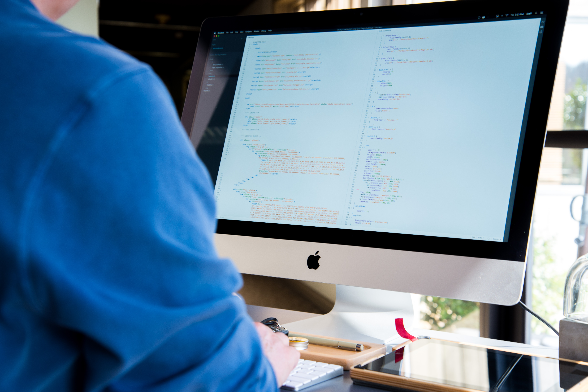

The Hypertext Markup Language (HTML) is a markup language used to create hypertext documents that are platform independent. The children bring home sets of High Frequency Words for each Phase. Many of these words are what we call 'tricky' words; that is, they cannot be sounded out and have to be learnt by memory. "
These should be practised regularly, as they are easy to forget. It is most effective to practise a few words for a few minutes every day than to practise for longer but at less frequent intervals. Don't try to learn all of the words in one go; choose a few at a time and add more when your child can confidently read these. Perhaps put a tick or smiley face on the back of the card each time your child reads it correctly. When they have several ticks or faces you could introduce more of the words.